Welcome to
Cat's Drawing Board !
My name is Mr. Luo (^^)
Drawing Intstructions:
- press your mouse and draw threads freely;
- double click your mouse, then left a white snow spot on it;
- press any key from a to z, then you can see the cat change a movement;
- simply move your mouse(imitate using a rubber) to clean the board, or you can just click the CLEAN on the left bottom;
- press the key 1-9 to change the weight of thread and size of snow spots.
Enjoy it?
Learn more about Cat's Drawing Board
Open it in P5.js